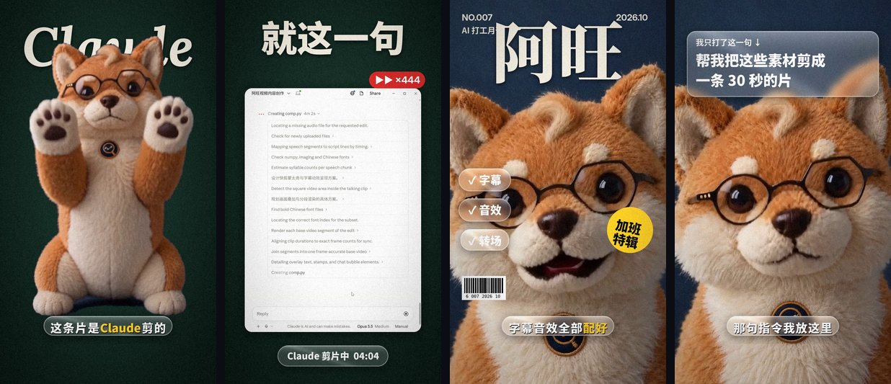

阿旺的 Prompt 库← 全部视频
阿旺的 Prompt 库← 全部视频这条片我没开过剪辑软件。素材准备好丢给 Claude，打一句中文，它自己挑镜头、上字幕、配音效、做转场。

成片里的几个画面，全部是 Claude 剪的
阿旺的说话画面是 HeyGen 对嘴做的，动作片段是 Higgsfield 上的 Seedance 生成的。你用自己拍的片段也一样可以。
视频里我打的就是这一句。素材全部上传，然后贴上：
帮我把这些素材剪成一条 30 秒的片
只打这一句也能剪，但想一次就剪得比较好，用这个加强版：
帮我把这些素材剪成一条 30 秒的竖屏短视频（1080×1920）。 素材： - 配音：整条配音，顺序不要改，句子不要删 - 说话画面：角色对嘴的画面 - 动作片段：穿插用，每段只取最好看的 1–2 秒 节奏：每 2 秒左右换一次画面，说话画面和动作画面交替，不要一个镜头停太久。 字幕：放在画面下方，跟着配音逐字亮起，关键词用黄色，句尾不要句号。 大标题：每句的重点词做成大字，放在角色身后，让角色挡住一部分字。 镜头：每个镜头都要动，推近、拉远或上下摇。 转场：用上下推、缩放模糊、漏光，不要只是硬切。 音效：转场加嗖声，重点字出来加砰一声，不要背景音乐。 先给我看几张截图确认风格，我说可以再出完整视频。
第一版出来后，说秒数 + 要改什么，它就只改那一段。我用过的几句：
字幕太小，放大一点 第 6 到 9 秒太单调，加推拉镜头和转场 对话框、字幕框改成磨砂玻璃效果 结尾最后几秒没有声音，检查音轨是不是比画面短 文件太大传不了，压到 25MB 以内给我
不要一次丢一大堆修改。一次改一两样，改坏了也容易讲回来。
阿旺的动作片段是在 Higgsfield 生成的。用下面的链接注册，登录后会有最高 5 折的个人折扣。
这是推广链接，你通过它订阅的话，阿旺会拿到一点佣金，你的价格不会变贵。折扣在登录后 3 小时内有效，建议先想好要哪个方案再点。